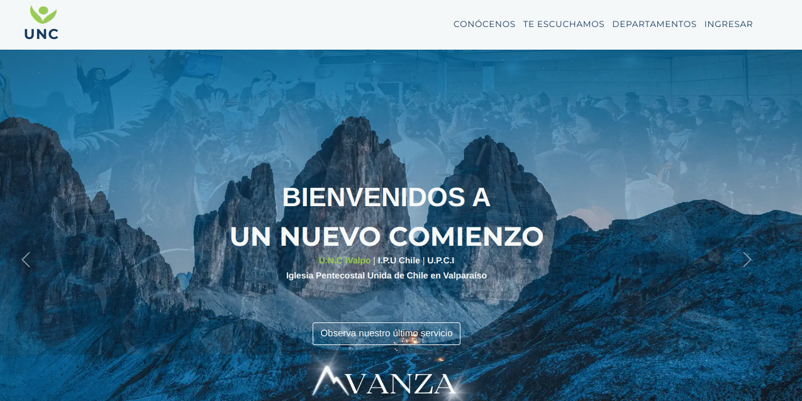
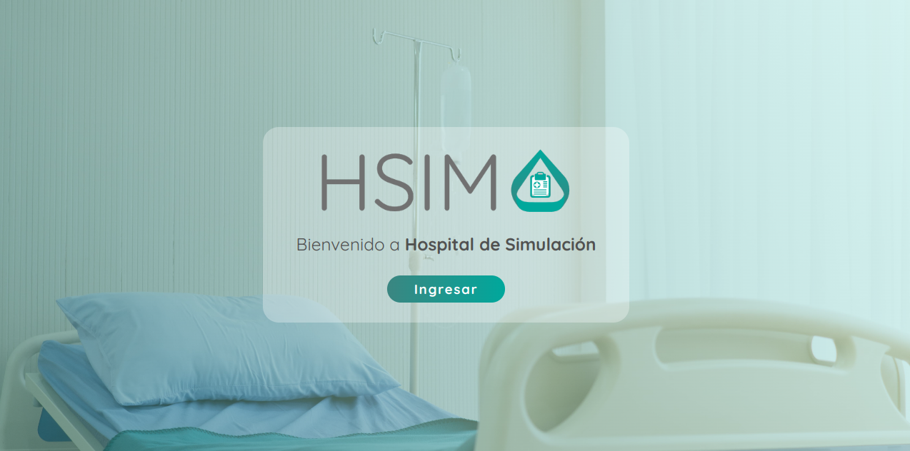

Junior Full Stack Developer con 3 años de experiencia. Mi expertise se centra en el uso de tecnologías como Angular, Laravel,
para la creación y mantenimiento de aplicaciones robustas y escalables. Soy una persona apasionada por el aprendizaje continuo y
altamente autodidacta, siempre en busca de nuevas tecnologías y metodologías para mejorar mis habilidades y contribuir de manera
significativa a los proyectos en los que participo.
Habilidades Blandas
Conocimientos
Angular | Ionic | Spring Boot | Laravel
JS | Java | PHP | C#
Unity
MySQL | Postgres
Git | Bitbucket
Postman | API REST
Metodologías Scrum y Kanban | Jira
Proyectos

UNC IVALPO
Página web, aplicación móvil y un sistema de control de asistencia y para los miembros de una iglesia.
QUIDA
Sistema de monitoreo de hogares inteligentes para cuidar y mejorar la calidad de vida de los adultos mayores, a partir del
seguimiento de las actividades básicas e instrumentales de su vida cotidiana.

HSIM
Una solución digital para el Hospital de Simulación de la Universidad Andrés Bello, que gestiona guías de habilidades,
coordina el uso de salas, y administra insumos con un sistema ERP.